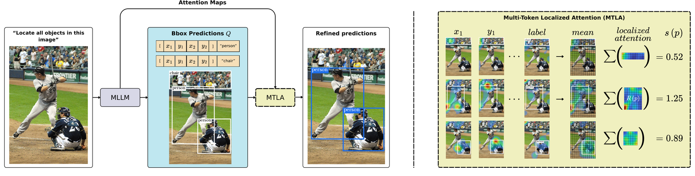
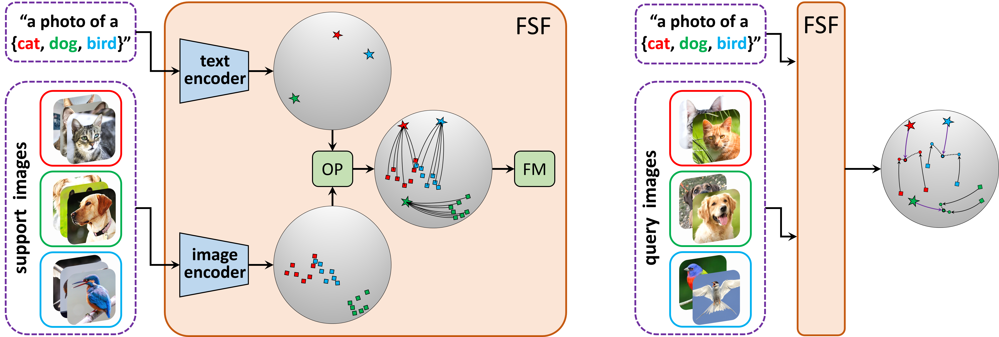
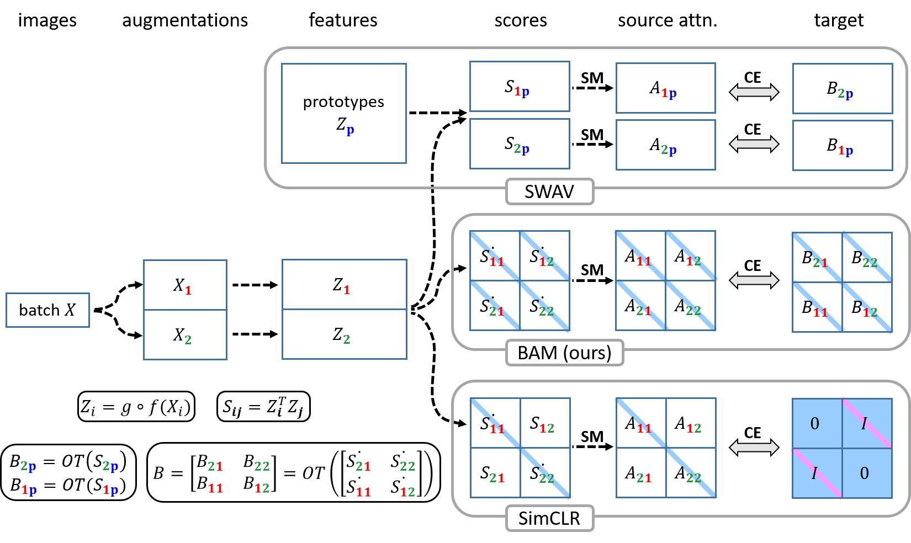
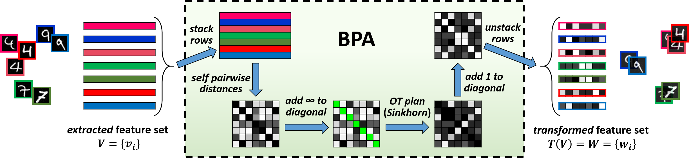
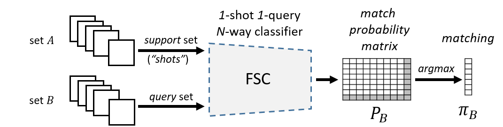

Propose and Attend: Training-free MLLM Grounding Confidence via Multi-Token Localized Attention
A training-free approach to MLLM grounding confidence based on multi-token localized attention.
Computer vision & multimodal learning
Building data-efficient multimodal systems that connect research with real-world applications.
I am a Ph.D. candidate in Computer Science at the University of Haifa, advised by Dr. Simon Korman, and an Applied Scientist Intern at Amazon Prime Sports. My research focuses on multimodal alignment, MLLM grounding, and data-efficient computer vision, with recent work spanning image, video, and audio localization.
Selected work
Research spanning multimodal grounding, encoder alignment, self-supervised learning, and few-shot classification.

A training-free approach to MLLM grounding confidence based on multi-token localized attention.

A flow-based approach for aligning independently pretrained vision and text encoders for few-shot image classification.
Alignment of independently pretrained encoders for data-efficient classification in biomedical imaging.

BAM matches self-attention representations across images to learn geometry-preserving features without labels.

A training-free, optimal-transport-inspired feature transform for transductive few-shot classification.

A few-shot classification formulation for robust visual correspondence under limited supervision and domain shifts.
Contact